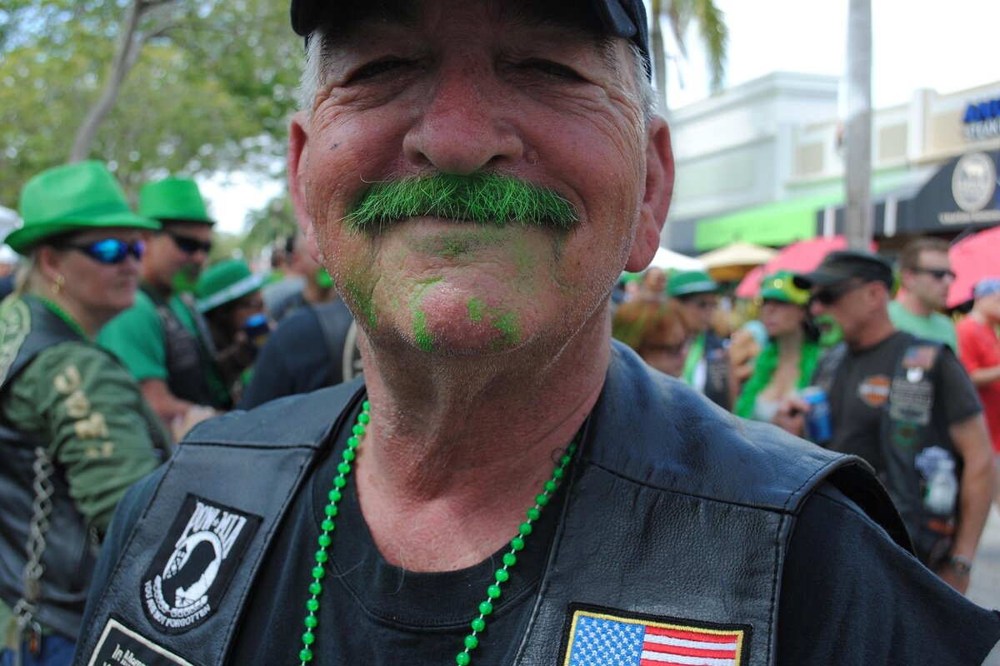

This Week in Tampa Bay: St. Patrick's Parties, Beer Fests, and Spring Training (March 8–17)

This Week in Tampa Bay: St. Patrick's Parties, Beer Fests, and Spring Training (March 8–17, 2026)
If last week felt busy, buckle up — Tampa Bay is about to go full send. Between St. Patrick's Day festivities, Tampa Bay Beer Week, spring training heating up, and a few under-the-radar events worth knowing about, the next ten days are stacked.
Here's what's happening and what's worth your time.
---
Paddy Fest St. Pete (March 13–15)
Tampa Bay's biggest St. Patrick's Day celebration is back at Williams Park in downtown St. Pete — and this year it's a full three-day event. Expect live music across multiple stages, Irish food vendors, craft beer, and the kind of green-tinted chaos that only happens once a year.
Where: Williams Park, 350 2nd Ave N, St. Petersburg When: Friday–Sunday, March 13–15 Details: paddyfeststpete.comIf you're only picking one St. Patrick's Day event this year, this is the one.
Corey Ave St. Patrick's Day Street Party (March 14)
Over on St. Pete Beach, Corey Avenue shuts down for its annual St. Patrick's Day block party. Live music, local vendors, food trucks, and a more laid-back beach-town vibe compared to the downtown scene. Great option if you want the celebration without the massive crowds.
Where: Corey Avenue, St. Pete Beach When: Saturday, March 14Greetings From Florida Beer Festival (March 13)
Tampa Bay Beer Week kicks into high gear with this standout event at Green Bench Brewing Co. in St. Pete. BarrieHaus and Green Bench are co-hosting, and they're bringing together 75+ lagers from over 30 Florida breweries — all unlimited pours for the session.
If you're into Florida craft beer, this is one of the best events of the year. Period.
Where: Green Bench Brewing Co., St. Petersburg When: Friday, March 13, 5–9 PMBusch Gardens Food, Wine & Garden Festival (Through May 10)
Already underway and running every weekend through mid-May, the Busch Gardens Food, Wine & Garden Festival features global food cabins, craft cocktails, and live entertainment — all included with park admission or an annual pass.
It's a good excuse to visit the park if you haven't been in a while. The food is legitimately better than you'd expect from a theme park.
Where: Busch Gardens Tampa Bay When: Weekends through May 10, 2026Grapefruit League Spring Training (All Month)
Spring training is in full swing across the Tampa Bay area. The Phillies are in Clearwater at BayCare Ballpark. The Blue Jays are playing at TD Ballpark in Dunedin. The Rays, Yankees, and more are all within driving distance.
Games run through March 26, and weekday afternoon games are some of the best-kept secrets in Tampa Bay — small crowds, sunshine, and cheap seats.
Tip: Check floridagrapefruitleague.com/schedule for the full calendar.Pass-A-Grille Home Tour (March 21)
If you love architecture, design, or just being nosy about other people's houses (no judgment), the annual Pass-A-Grille Home Tour lets you explore some of the most charming coastal homes on the Gulf. This self-guided walking tour runs 1–5 PM and tickets are $35 online, $40 day-of.
Where: Pass-A-Grille, St. Pete Beach When: Saturday, March 21, 1–5 PM Tickets: passagrillehometour.comEmbracing Our Differences (Open Now)
This free outdoor art exhibition just opened at Poynter Park in St. Pete. Billboard-sized artworks line the waterfront with messages about diversity, inclusion, and what makes communities stronger. It's free, it's outdoors, and it's worth a walk-through — especially if you're already downtown.
Where: Poynter Park, 3rd St S & 9th Ave S, St. Petersburg---
Why This Matters for Local Businesses
If you run a business in Pinellas or Pasco County, weeks like this are a reminder: people are actively searching for things to do, places to eat, and services nearby. When your website shows up in those searches — whether it's "best brunch near Williams Park" or "auto detailing near Clearwater" — that's real traffic from real customers.
Local events drive local search traffic. Make sure your site is ready for it.
---
Need help making sure your business shows up when it matters? On Point builds websites and runs SEO for small businesses across Pinellas and Pasco County. Let's talk about what's working — and what's not.Ready to grow your business online?
Get Your Free Strategy Call →